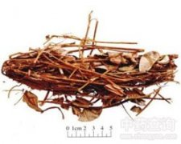

广金钱草

拼音
Guǎnɡ Jīn Qián Cǎo
别名
落地金钱、铜钱草、马蹄香、假花生
来源
本品为豆科植物广金钱草Desmodium styracifolium （Osh.） Merr. 的干燥地上部分。夏、秋二季采割，除去杂质，晒干。
生境分布
生于山坡草地或丘陵灌丛中。分布于福建、湖南、广西和广东等省区。
药材特点
半灌木状草本，长达1米。茎平卧或斜举，基部木质，枝呈圆柱形，与叶柄均密被黄色短柔毛。叶互生，有披针形托叶1对，小叶1片，有时3片，中间小叶大而形圆，长2.5～4.5厘米，宽2～4厘米，侧生小叶矩圆形，较小，先端微凹，基部浅心形或近平截，全缘，上面无毛，下面密被银白色丝光毛而呈浅灰绿色，叶脉下凸，侧脉羽状，平行，约为10对，小托叶钻形。夏季茎顶或叶腋抽出总状花序，花密而多，2朵并生，具香气，花梗下弯，长约3毫米；花萼钟状；蝶形花冠紫红色，长约5毫米，旗瓣倒卵形。荚果具3～6荚节，一侧平直，另侧节间呈波状收缩，被有短柔毛和钩状毛，每节有肾形种子1粒。
性状
本品茎呈圆柱形，长可达1m，密被黄色伸展的短柔毛，质稍脆，断面中部有髓。叶互生，小叶1或3，圆形或矩圆形，直径2～4cm；先端微凹，基部心形或钝圆，全缘；上表面黄绿色或灰绿色，无毛，下表面具灰白色紧贴的绒毛，侧脉羽状；叶柄长1～2cm；托叶1对，披针形，长约0.8cm。气微香，味微甘。
性味
甘、淡，凉。
功能主治
清热除湿，利尿通淋。用于热淋，砂淋，石淋，小便涩痛，水肿尿少，黄疸尿赤，尿路结石。
用法用量
15～30g。
化学成分
全草显生物碱、黄酮甙、酚类、鞣质反应。
药理作用
1：无药理作用数据
摘录
《中国药典》